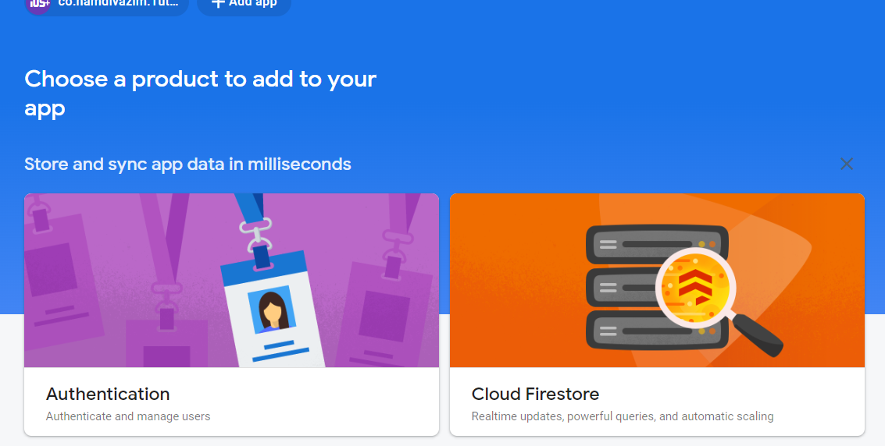
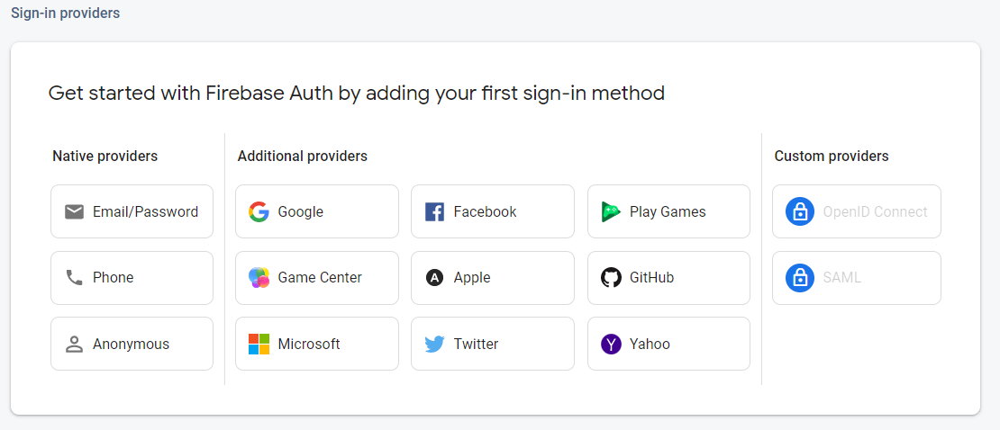

Hello awesome developers, in the last part, we set up our Firebase project and connected it to our Xcode project. Today, we'll be setting up Authentication with our project :)
struct ContentView: View {
@State var email = ""
@State var password = ""
@StateObject var firebaseManager = FirebaseManager()
init() {
FirebaseApp.configure()
}
var body: some View {
NavigationStack {
VStack {
TextField("Email", text: $email)
.keyboardType(.emailAddress)
SecureField("Password", text: $password)
Button("Sign In") {
firebaseManager.signIn(email, password)
}
.buttonStyle(.borderedProminent)
}
.padding()
.navigationTitle("Login")
}
}
}
Go ahead and write this code in ContentView.swift. If you wish, you can design your own UI, but make sure you have an email and a password variable. When you've got your view just the way you want it, switch back to your Firebase console for the next few steps :)
In order for Authentication to work with our app, we'll need to enable it in our Firebase project. In your console you should see a screen similar to the one above. Select Authentication and then press Get Started. There should be a tab named Sign in Methods - switch to it at you should be at a screen similar to the screenshot below:
For now, we'll only be adding the typical email and password sign in method, but you can add more sign in methods later (stay tuned for a Sign in with Google tutorial 😁)! Select Email/Password and turn on the email and password switch. Later, you can also add the option for a passwordless sign in :) Once we're done, you can go ahead and add your first user in the Users tab! Once you're ready, switch back to FirebaseManager.swift in your Xcode project and get ready for some exciting coding 😃
func signIn(_ email: String, _ password: String) {
let auth = Auth.auth()
}
We'll first initialise an instance of Auth.auth(). This is basically the object that has all the goodies we want :) Now comes the fun part...
func signIn(_ email: String, _ password: String) {
let auth = Auth.auth()
auth.signIn(withEmail: email, password: password) { result, error in
if let error = error {
print("An error occured while signing in: \(error.localizedDescription)")
return
}
guard let uid = auth.currentUser?.uid else { return }
// Now we're signed in, you can do whatever you want!
}
}
Yep - it's as simple as that! You have access to the current user's data throughout the entire session using the optional auth.currentUser? ! This will return nil if no user is signed in. Some great news is that registering a user is just as easy as signing in:
func registerUser(_ email: String, _ password: String) {
let auth = Auth.auth()
auth.createUser(withEmail: email, password: password) { result, error in
if let error = error {
print("An error occured while signing up: \(error.localizedDescription)")
return
}
guard let uid = auth.currentUser?.uid else { return }
// The user is now registered and signed in - do whatever setup here :)
}
}
Awesome - right? Firebase is a great tool and is surprisingly easy to use with Swift! In the next part, we'll look at integrating Firebase Firestore into our app too - you could potentially get started early by enabling Firestore in the console, or you could wait until the next tutorial! Until then, happy coding :)